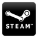
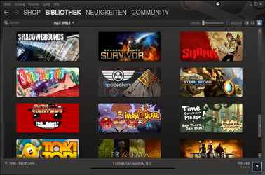
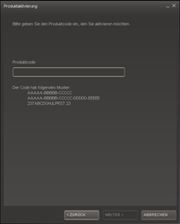

Steam Client unter Wine
Dieser Artikel wurde für die folgenden Ubuntu-Versionen getestet:
Ubuntu 16.04 Xenial Xerus
Zum Verständnis dieses Artikels sind folgende Seiten hilfreich:

Steam  ist eine mehrsprachige Spieleplattform der Firma Valve, mit der man Spiele wie Counter-Strike, Half-Life usw. herunterladen, aktualisieren und spielen kann.
ist eine mehrsprachige Spieleplattform der Firma Valve, mit der man Spiele wie Counter-Strike, Half-Life usw. herunterladen, aktualisieren und spielen kann.
Seit Februar 2013 ist Steam auch nativ für Linux verfügbar. Der Linux-Client wird im Artikel Steam beschrieben. Angeboten werden über den Clienten eine Auswahl von Spielen. Weitere Spiele darüber hinaus, die nur mit Hilfe von Wine auch unter Linux laufen, sind mit dem nativen Linux-Client derzeit nicht installierbar, sodass auch weiterhin eine Installation über Wine auf eigene Gefahr und ohne Support Sinn machen kann.
|  |
| Steam |
Installation¶
Vorbereitung¶
Um Steam mit Wine zum Laufen zu bringen, muss zusätzlich das Paket
ttf-mscorefonts-installer (multiverse )
 mit apturl
mit apturl
Paketliste zum Kopieren:
sudo apt-get install ttf-mscorefonts-installer
sudo aptitude install ttf-mscorefonts-installer
Gecko-Engine¶
Die neuere Wine-Versionen sind meistens mit Gecko-Engine ausgerüstet. Man kann unter
dpkg -l | grep wine
nachschauen, ob Gecko-Engine vorhanden ist. Wenn dies nicht der Fall ist, dann muss es installiert werden.
Den Befehl [3]
wine iexplore http://winehq.org
ausführen und dann auf den "INSTALL"-Button klicken.
Steam installieren und starten¶
Nun lädt man den Steam Installer  herunter und speichert ihn im Homeverzeichnis. Danach startet man die Installation im Terminal [3] mit
herunter und speichert ihn im Homeverzeichnis. Danach startet man die Installation im Terminal [3] mit
msiexec /i SteamInstall.msi
Auf einem 64-bit-System kann die Installation von Steam mit der Option --force-architecture erzwungen werden.
Unter Ubuntu 16.04 funktioniert obige Vorgehensweise nicht, beim Aktualisieren von Steam tritt ein Fehler auf. Jedoch kann Steam in wine unter Zuhilfenahme von winetricks installiert werden. Dazu führt man in einem Terminal [3]
winetricks steam
aus.
Das steam:// Protokoll nutzen¶
Wenn man möchte, kann man Firefox so erweitern, dass das steam:// Protokoll benutzt werden kann. Dieses Protokoll findet unter anderem Anwendung auf der Seite https://steamcommunity.com/. Nach dem einloggen sieht man unter anderem an der rechten Seite seine Freundesliste, falls dort gerade ein Spieler auf einem Server ist, sieht man auch einen kleinen Link "Join", dieser Link benutzt aber nicht das normale http-Protokoll, so wie man es gewohnt ist, sondern verwendet das "steam"-Protokoll. Es ist möglich, Firefox dieses Protokoll beizubringen und somit direkt Steam-Spiele zu starten und sich auf die Server zu verbinden.
Zuerst wird eine Datei an einem beliebigen Ort angelegt, zum Beispiel in ~/.wine/drive_c/Programme/Steam/. Die Datei kann beliebig benannt werden, im Folgenden wird sie join.sh genannt. In die Datei wird Folgendes geschrieben:
#!/bin/bash exec wine "C:\\Programme\\Steam\\Steam.exe" "$@"
Die Datei wird abgespeichert und geschlossen. Anschließend wird ein Rechtsklick  auf die Datei ausgeführt "Eigenschaften -> Berechtigungen" Bei "Datei als Programm ausführen" ein Häkchen setzen. Nun muss Firefox das Protokoll bekannt machen, dafür geht man auf about:config und bestätigt die Warnung, dass man vorsichtig sein wird. Auf der nun angezeigten Seite macht man einen Rechtsklick "Neu -> Boolean", als Name wird "network.protocol-handler.external.steam" angegeben, als Wert "true". Anschließend wird wieder ein Rechtsklick ausgeführt "neu -> string -> Name: network.protocol-handler.app.steam -> Wert: /pfad/zur/join.sh". Jetzt begibt man sich auf eine Webseite, auf der das steam-Protokoll verwendet wird und klickt auf den entsprechenden Link, Firefox wird nun nach der zu öffnenden Anwendung fragen, man muss hier wieder die join.sh angeben. Mit "OK" bestätigen und Steam/CS:S startet und verbindet sich mit dem Server.
auf die Datei ausgeführt "Eigenschaften -> Berechtigungen" Bei "Datei als Programm ausführen" ein Häkchen setzen. Nun muss Firefox das Protokoll bekannt machen, dafür geht man auf about:config und bestätigt die Warnung, dass man vorsichtig sein wird. Auf der nun angezeigten Seite macht man einen Rechtsklick "Neu -> Boolean", als Name wird "network.protocol-handler.external.steam" angegeben, als Wert "true". Anschließend wird wieder ein Rechtsklick ausgeführt "neu -> string -> Name: network.protocol-handler.app.steam -> Wert: /pfad/zur/join.sh". Jetzt begibt man sich auf eine Webseite, auf der das steam-Protokoll verwendet wird und klickt auf den entsprechenden Link, Firefox wird nun nach der zu öffnenden Anwendung fragen, man muss hier wieder die join.sh angeben. Mit "OK" bestätigen und Steam/CS:S startet und verbindet sich mit dem Server.
|  |
| Aktivierung Humble Bundle |
Problemlösungen¶
Produktaktivierung¶
Um ein Produkt, z.B. aus einem Humble Bundle, zu aktivieren, wählt man im Hauptfenster den Punkt "Spiel hinzufügen... -> Ein Produkt bei Steam aktivieren... " und gibt dort den Code ein, welchen man auf der Seite des Bundles ersehen kann.
Schriftarten fehlen¶
Steam benötigt die Schriftarten Tahoma (tahoma.ttf) und Tahoma Bold (tahomabd.ttf), die zumindest bei neueren Wine-Versionen (>=9.4.7) automatisch nach /usr/share/wine/fonts/ installiert werden. Bei älteren Wine-Versionen muss man sich die Fonts aus dem Internet herunterladen  .
.
Damit Steam diese Schriftarten verwendet, müssen sie möglicherweise noch in das Schrift-Verzeichnis ~/.wine/drive_c/windows/Fonts/ von Wine kopiert werden.
Es wird keine Schrift angezeigt¶
Es kann gelegentlich vorkommen, dass Steam startet, aber keinerlei Schrift erscheint. Es hilft, Steam mit folgendem Startparameter zu starten:
-no-dwrite
Shop und News werden nicht angezeigt¶
Die Lösung besteht darin, die Desktopdatei von Steam zu bearbeiten, die bei der Installation von Steam automatisch angelegt wird. Dazu muss der Parameter
-no-cef-sandbox
an die Startbefehleigenschaften angehängt werden.
Steamspiele stürzen nach kurzer Spielzeit (3 Sekunden bis 2 Minuten) ab¶
Das Problem rührt daher, dass der ALSA-Adapter von PulseAudio fehlerhaft arbeitet. Da die Wine Entwickler sich weigern, einen Adapter für PulseAudio zu schreiben, kommt es hier zu Problemen. Abhilfe schafft das Programm pasuspender, welches PulseAudio abschaltet, und zwar solange, wie der Childprozess läuft.
Steam sollte daher mittels pasuspender gestartet werden, der Befehl dafür lautet, auf einem deutschsprachigen System
pasuspender -- ~/.wine/drive_c/Programme/Steam/Steam.exe
Steam bricht bei 26% ab¶
1. Lösungsmöglichkeit¶
Man führt im Verzeichnis, in dem Steam installiert wurde, standardmäßig ist das ~/.wine/drive_c/Programme/Steam, folgenden Befehl aus [3] :
nice -n 19 wine Steam.exe
Wenn der Updatevorgang wieder abbrechen sollte, kann man versuchen, die Datei ClientRegistry.blob zu löschen, bevor man den vorherigen Befehl eingibt. Nachdem sich Steam dann erfolgreich aktualisiert hat, kann es normal gestartet werden.
2. Lösungsmöglichkeit¶
Es gibt einen schwerwiegenden Bug in Steam, welcher auch unter Windows das Updaten verhindert, deshalb hat einer der Valve-Mitarbeiter eine vollständige Steam-Installation ins Internet gestellt, welche das Problem behebt.
Das Archiv mit der ursprünglichen Bezeichnung SteamFull.zip muss in dem Installationsverzeichnis von Steam entpackt werden.
Gecko wird nicht heruntergeladen¶
Es gibt alternative Lösungen, aber diese scheint am ehesten zu funktionieren:
wine regedit
Zum Schlüssel HKEY_CURRENT_USER/Software/Wine/MSHTML hangeln. Dort ist GeckoURL mit dem Downloadpfad von belang.
Rechte Maustaste auf "GeckoURL -> Ändern" klicken.
Die URL durch diese ersetzen:
http://heanet.dl.sourceforge.net/sourceforge/wine/wine_gecko-0.1.0.cab. Dies ist die URL, die auf Sourceforge.net als Direktlink angegeben wird zur Version 0.1.0.wineboot
Steam starten und Gecko-Engine herunterladen.
Nur schwarzes Fenster¶
Unter Spielen, die auf der Source Engine basieren, kann es vorkommen, dass während des "Loading[s]..." nach den Intros erst ein Hintergrund gezeigt wird und anschließend, mit dem Einsetzen der Musik, das Fenster schwarz wird.
winecfg
Unter "Grafik -> Pixel-Shader" deaktivieren.
Eingabefelder¶
Die Eingabefelder müssen bei älteren WINE-Versionen (vor WINE 0.9.60) erst mit einem Rechtsklick "aktiviert" werden.
Startparameter¶
Nachdem man Steam installiert hat, wird eine Desktop-Verknüpfung erstellt, die von den Startparametern her optimiert werden kann. Steam kennt folgende Optionen:
| Steam Optionen | |
-fullscreen | Im Vollbildmodus starten. |
-full | Im Vollbildmodus starten. |
-windowed | Im Fenstermodus starten. |
-width X -height Y | Eine Auflösung von X x Y benutzen. |
-applaunch N | N bestimmt, welches Spiel gestartet werden soll. 10 steht z.B. für Counter:Strike. Mehr dazu bei Valve |
-heapsize HP | HP ist ein Ganzzahlwert in Bytes, der den Speicher zusichert. (Werte siehe unten). |
-dxlevel | L gibt an, welche DirectX-Version benutzt werden soll. 70 entspricht dabei DirectX 7.0. |
+map_background none | Deaktiviert den 3D-Hintergrund im Menü. |
-noforcemspd | Mausbeschleunigung aus. |
-noforcemaccel | Mausbeschleunigung aus. |
-noforcemparms | Mausbeschleunigung aus. |
-preload | Lädt Texturen bei Wert 1 sofort in den Speicher, bei 0 erst nach dem Connect. |
-freq xx | Bildwiederholfrequenz des Monitors. |
-noaafonts | AntiAliasing bei Schriften aus. |
-soft | Erzwingt Software-Grafiktreiber. |
-gl | Erzwingt openGL-Grafiktreiber. |
-gldrv Default | Treiber für OpenGL. |
-d3d | Erzwingt Direct3D-Grafiktreiber. |
-d3ddrv Default | Treiber für Direct3D. |
-window | Zeigt Fenster mit Fehlermeldungen beim Absturz. |
-16bpp | 16-bit-Farben |
-32bpp | 32-bit-Farben |
-autoconfig | Originale Configwerte setzen. |
-nojoy | Joysticks ausschalten. |
-mouselook | Aktiviert Mouselook (Standardwert ist 1). |
-noipx | IPX-Protokoll deaktivieren. |
-condebug | Debug-Informationen. |
+clientport 2700X | startet CS mit anderem Clientport (Standard ist 27005). |
| Heapsize | |
| Installiertes RAM | Heapsize-Wert (= halbes RAM) |
| 256 MB | -heapsize 65536 |
| 512 MB | -heapsize 262144 |
| 768 MB | -heapsize 327680 |
| 1024 MB | -heapsize 524288 |
| 1536 MB | -heapsize 786432 |
| 2048 MB | -heapsize 1048576 |
Weitere Optionen findet man z.B. hier: Valve .

- Erstellt mit Inyoka
-
 2004 – 2017 ubuntuusers.de • Einige Rechte vorbehalten
2004 – 2017 ubuntuusers.de • Einige Rechte vorbehalten
Lizenz • Kontakt • Datenschutz • Impressum • Serverstatus -
Serverhousing gespendet von